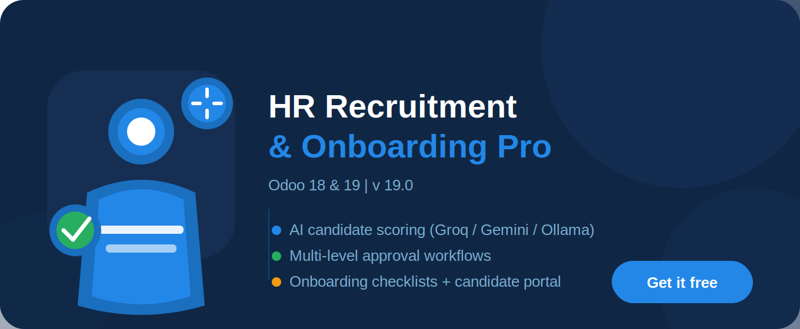

Automatically score candidates 0-100 using free AI providers — Groq (Llama 3.3), Google Gemini, or local Ollama. Get strengths, concerns and interview questions for every applicant. No OpenAI key needed.
Offer approvals flow through Department Manager then HR Manager automatically. Auto-escalation after 48 hours. Full audit trail with refusal reasons captured at every step.
12-task onboarding checklist auto-generates on hire covering IT setup, contract signing, NDA, payroll, compliance training, 30-day and 90-day reviews. Progress bar tracks completion live.
Full Kanban pipeline from job posting to onboarding. Candidates receive automatic email notifications at every stage change. HR managers see AI scores as colour-coded badges on every Kanban card.
Candidates apply directly from your company website. Each application gets a unique secure tracking link so candidates can follow their application status without logging in.
14,400 requests/day FREE
Llama 3.3 70B model
~0.5 seconds per score
No credit card required
console.groq.com
1,500 requests/day FREE
Gemini 2.0 Flash model
~1-2 seconds per score
Google account only
aistudio.google.com
Unlimited — Runs locally
Llama 3, Mistral, Gemma
No internet needed
Complete data privacy
ollama.com
Post jobs, review AI scores, manage pipeline, send offers, run onboarding
Approve headcount requests, approve offers, conduct 30 and 90 day reviews
Apply from website, track application, accept offer — no Odoo login needed